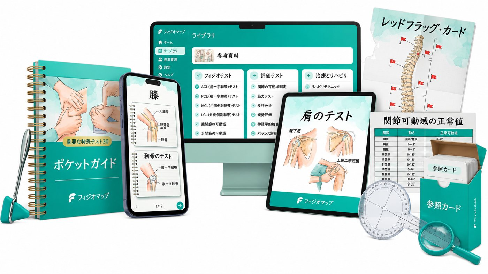
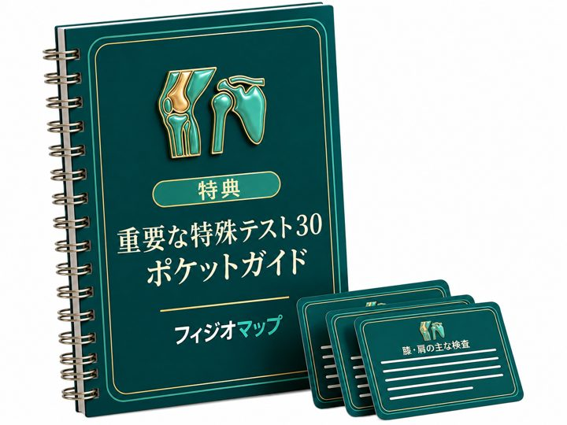
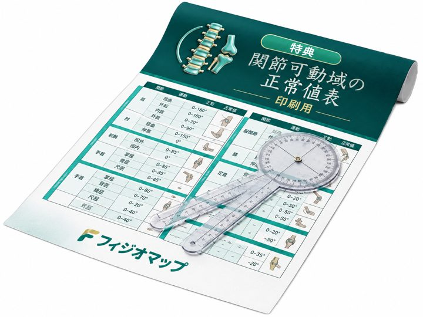
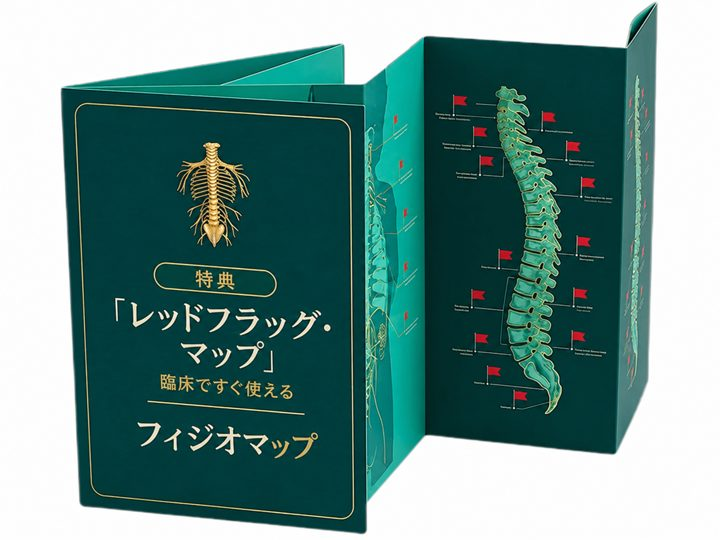

フィジオマップ · 評価からリハビリまで54テーマ・160ページ超のビジュアルマップ · 無料特典3点
評価からリハビリまで、理学療法をビジュアルマップと定着する復習で。アプリはスマホでもパソコンでも、このページからいつでも開けます。

54テーマ
201ページ（PDF版）
324確認問題
📱フィジオマップ アプリを開く
54テーマのビジュアルマップ、全テスト・疾患のファクトシート、各ページ2問の確認問題、記憶モード（ライトナー方式）、基礎・中級・臨床の3レベル、連続学習日数・ポイント・習熟度・実績バッジ。
アプリを開く › 📄PDF版（ダウンロード・印刷）全54テーマ・201ページ。ビジュアルマップ、ファクトシート、臨床のポイント、確認問題、巻末に解答と解説。
PDFを開く · 29.9 MB無料特典 3点

特典 1ポケットガイド：重要な特殊テスト30
試験や臨床実習でよく出る30の特殊テストを、手順・陽性の意味・評価する組織とともに。ポケットサイズ（A6）。
PDFを開く・保存 · 33ページ · 1.0 MB
特典 2印刷できる関節可動域の正常値表
肩から足関節まで、すべての関節の参考可動域を表に。右・左の測定値も記入できます（A4・2ページ）。
PDFを開く・保存 · 2ページ · 0.5 MB
特典 3ひと目でわかるレッドフラッグ
痛みが機械的なものではなく、医師の評価が必要かもしれないサインを部位別に1枚に（A4横）。
PDFを開く・保存 · 1ページ · 0.5 MBはじめ方
- アプリをホーム画面に追加アプリを開いたら、ブラウザの共有メニューから「ホーム画面に追加」。次からはワンタップで開けます。
- テーマ1から読み、2問に答える各テーマは3ページ（ビジュアルマップ・ファクトシート・臨床のポイント）。各ページの最後に2問。
- 毎日「記憶モード」を1回間違えた問題は翌日に、覚えた問題は間隔をあけて自動で出題されます。
- 特典を印刷して手元にポケットガイドは白衣のポケットに、可動域表とレッドフラッグは治療台のそばに。
NEXT STEP次のステップ
今日はアプリでテーマ1「運動面と運動軸」を開き、最初の2問に答えましょう。10分で1テーマ進めます。
理学療法を学ぶ学生と専門職のための学習・参照用の教材です。有資格の医療専門職による評価に代わるものではありません。学習の記録はお使いの端末のブラウザに保存されます（端末ごとに別々の記録になります）。